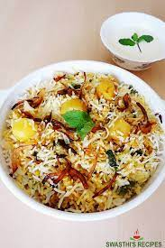

Aloo Baryani

-
About Aloo Baryani:
-
Aloo Biryani is a delicious vegetarian biryani variety made with basmati rice, potatoes, spices, yogurt, onions and herbs.
This Aloo Dum Baryani as the name says is cooked in dum style and is a layered biryani.
If you are a vegetarian and looking forward to try a meet-free biryani, this Aloo Biryani is a great.
Go Back